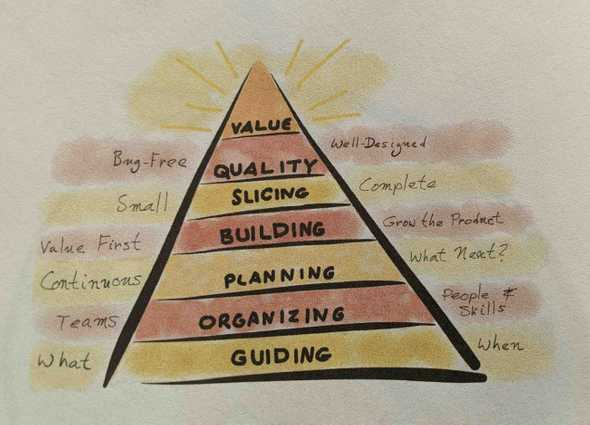

Index Agile Lego Game Agile Resources
This blog outlines some Agile resources and methods that I have used to implement and agile culture through the use of the Scrum Framework.
Please click here for my LinkedIn profile.
Ron Jeffries' Value Pyramid in his book "The Nature Of Software Development" is shown here.

It demonstrates a natural way of building software incrementally, with a focus on delivering value early and often.